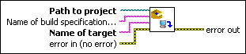

Deploy VI
Owning Palette: Application Builder VIs
Requires: Base Development System
Deploys the output of a build specification to a target. To use this VI, build the build specification using the Build VI.

 Add to the block diagram Add to the block diagram |
 Find on the palette Find on the palette |